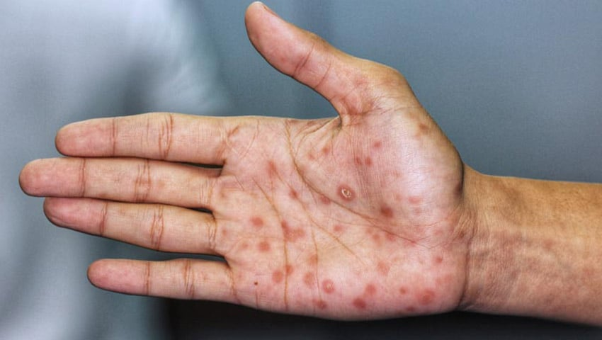

Información general sobre el sifilis
Imagen
Descripción
Enfermedad de transmisión sexual causada por la bacteria Treponema pallidum. Comienza con una llaga indolora (chancro) en el lugar de entrada de la bacteria y puede evolucionar a formas más graves si no se trata.
Causas
- Contacto sexual sin protección con una persona infectada
- Transmisión de madre a hijo durante el embarazo o parto
- En raros casos, por transfusiones de sangre contaminada
Síntomas
La sífilis aparece en fases:
- Primaria: chancro indoloro en genitales, boca o ano
- Secundaria: sarpullido, fiebre, dolor de garganta, pérdida de peso
- Latente: sin síntomas visibles
- Terciaria: daño a órganos internos como cerebro, corazón y ojos
Tratamiento
Aunque puede causar complicaciones graves si no se trata, el tratamiento busca eliminar la infección, prevenir daños permanentes y evitar la transmisión:
- Antibióticos (generalmente penicilina benzatina)
- Seguimiento médico para confirmar la curación
- Pruebas de detección en embarazadas y personas con riesgo elevado